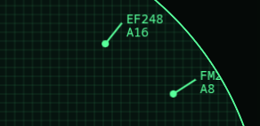
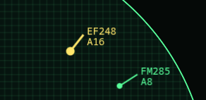
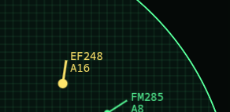
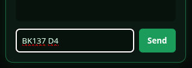
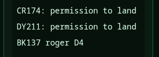
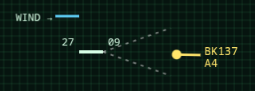

Bearzenker
Controller's brief
Bearzenker
Controller's brief
ATC — Codex
A circular scope with rounded green panels, built to the letter of the specification and nothing beyond it. If you want to see the requirements document rendered as a game, this is the one.
Read the scope

Aircraft enter at the edge of the radar. The dot is the airplane; the line is its direction of travel. The tag carries the flight number and the altitude in thousands of feet — 9 means 9,000 feet. The flight list on the left is your running inventory; the chat on the right is where everyone talks to you.
Select an aircraft

Click within two blocks of the dot. The aircraft highlights, and it is now the target of whatever you do next — either a typed command, or a click on the map.
Give it somewhere to be

Click a destination. The pilot confirms in chat and steers as needed to reach it, turning 30 degrees per turn.
The mistake everyone makes: when the aircraft reaches its destination it does not stop. It calls for a heading and then flies straight on until you answer. Aircraft that leave the map count against your score.
Work the altitude

There is no altitude slider, and that is deliberate. Altitude is typed. Use the command prompt at the bottom of the chat window: give the flight number, then the command.
L270 turn left to heading 270
R090 turn right to heading 090
H180 turn to heading 180, your choice of direction
C11 climb to 11,000 feet
D5 descend to 5,000 feet
The pilot acknowledges and works to the ordered altitude at 2,000 feet per turn. Start descending early — a plane at 11,000 feet needs three turns of lead time before it can accept an approach.
Deliver it to final approach

The dotted V extending from the runway is the approach vector. Get the aircraft inside it, within 30 degrees of the runway heading and at 5,000 feet or below, and the pilot calls "on final approach" and lands itself. Land into the wind — the pointer at the airport tells you which way it is blowing.
Three ways to lose points
- A near miss — two aircraft within two blocks at the same altitude.
- A lost aircraft, flown off the edge of the scope.
- A collision, which is not a penalty. It is the end of the game. Two aircraft entering final approach on the same turn counts as one.
Fly the level
Level one runs 60 turns. Two aircraft start on the scope and one more arrives every five turns, six in total. Turns advance on a five-second beat, and you may issue orders during the pause — the specification says so, and this build follows the specification exactly.
Scope is warm. Six inbounds and sixty turns.
Take the scope →Technology preview. Entertainment purposes only. No code here has been reviewed by a human.